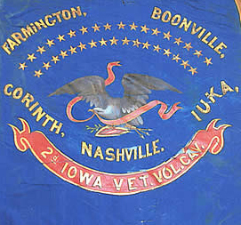
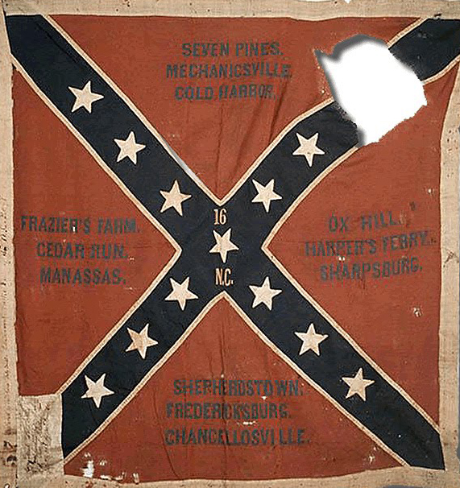

|
During the Civil War, battle flags were symbols of
bravery, pride and patriotism. They were also practical
markers, identifying the location of battle units during
military engagements. The size, shape and colors of each
|

Flag of the 2nd Iowa Cavalry
|
regimental flag varied greatly and depended on whether the
soldiers were part of an infantry, cavalry or artillery
regiment.
In the North, Union regulations required that infantry
regiments carry at least two flags. The first was the
national flag. Better known as the "Stars and Stripes" of
1861, this flag contained the stars of thirty-four states.
Regiments were also required to carry a flag bearing the
arms of the United States and the name of the specific
regiment. This flag was blue with the national eagle
emblazoned in the center. Additionally, many regiments
carried "colors," that identified their state and listed the
battles in which they had fought.
Union Cavalry regiments were issued a blue flag with the
national coat of arms and, just below, a scroll painted with
the regimental name and number. Artillery units in the North
carried both national and regimental colors. The flags of
the artillery, however, were yellow with a crossed cannon in
the center.
Shortly after the first seven southern states seceded,
the Confederate states adopted an official flag, better
known as the "Stars and Bars." This flag contained three
horizontal stripes - red, white, red - with a blue section
in the upper left with seven white stars. Because it was
hard to distinguish the Stars and Bars from the Stars and
Stripes during battle, the flag was replaced in May of 1863,
by the "stainless banner," a rectangular white flag with a
red section displaying a white-bordered blue cross studded
with thirteen white stars.
The Confederate armies also carried what became known as
|

Flag of the 16th North Carolina infantry
|
the "Southern Cross," or the Southern battle flag. This was
a square flag that consisted of a red field with a blue
cross, bordered in white, with the necessary number of stars
aligned on the bars of the cross. The only difference
between the flags of the infantry, artillery and cavalry
units was size; infantry regiments carried a larger flag
than artillery batteries and cavalry units. The Southern
battle flag is the one most commonly identified with the
Confederacy.
For both the North and South, a color bearer carried the
flag into battle. The battle flag created a focal point for
the regiment to rally around and to use as a guide in the
midst of the fighting. However, they also provided the enemy
with a large, visible target. As a result, the mortality
rate of color bearers was very high. The fact that a large
number of men were willing to step forward and bear the
colors demonstrates how each flag not only represented a
particular state and region, but also the pride of its
unit's soldiers.
Source: Joan Waugh, ed., Facts on File Encyclopedia of American
History: Civil War and Reconstruction, 1856 to 1869 (New York: Facts on
File, 2003), 26.
|